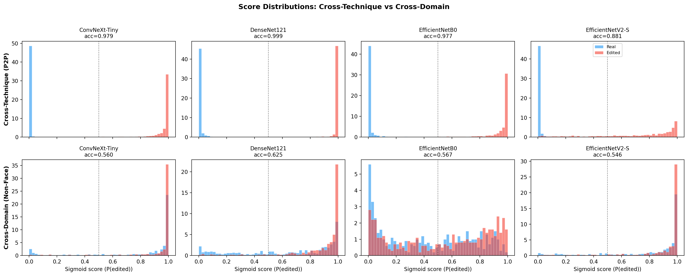
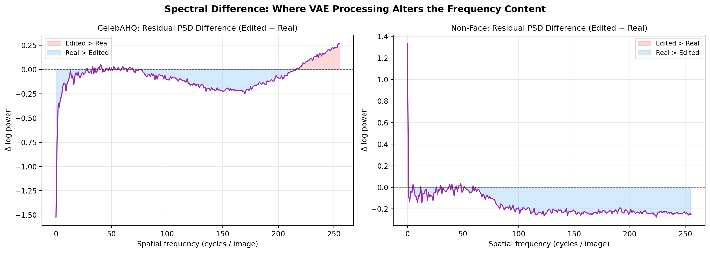
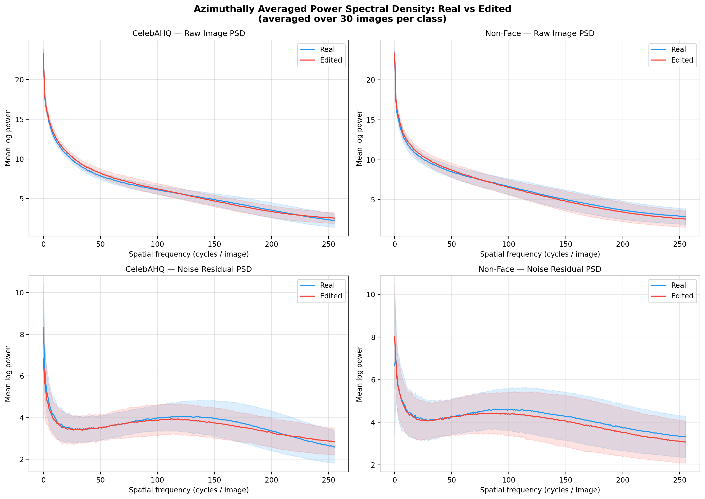

Evidence for VAE decoder fingerprint detection
Despite near-perfect in-domain accuracy, multiple lines of evidence indicate that the classifiers did not learn to detect facial edits. Instead, they learned to identify a frequency-domain fingerprint introduced by the VAE decoder, a component common to all latent diffusion pipelines.
Performance is independent of edit area
The Semi-Truths dataset categorises each edit by the percentage of the image that was actually modified. Edits range from tiny (<1% of pixels, like a lip or ear) to large (20-60%, like a full hair restyle). If the models were truly detecting the edited pixels, performance should degrade as the edit region shrinks: a 0.5% lip edit should be far harder to find than a 50% hair swap.
However, the models classified tiny edits with the same confidence as large ones. A CNN classifying a 0.5% upper lip modification with 100% confidence raises questions about what signal the model is actually responding to. This suggests the classifier is not attending to the edited region itself, but to a property that affects the entire image regardless of edit size.
The VAE fingerprint is present across the entire image, not just at the edit site. This is why even sub-1% edits are classified with perfect confidence: the model is responding to a full-image signal, not the tiny edited region.
DenseNet121: perfect 501/489 classification on a dataset dominated by tiny and small edits, suggesting the model relies on a signal unrelated to edit size.
Cross-technique generalisation
The models were trained exclusively on inpainting edits, where a masked region is regenerated. They were then evaluated on prompt-to-prompt (P2P) edits, a fundamentally different editing technique that uses attention manipulation to guide the diffusion process rather than masking.
Despite never encountering P2P edits during training, DenseNet121 achieved 99.9% accuracy on P2P test data. Both inpainting and P2P share the same diffusion pipeline, meaning the edited images in both cases pass through the same VAE decoder. The models were not generalising across editing techniques; they were responding to the same VAE fingerprint present in both.
This distinction is important. The learned signal is not tied to how an edit was performed, but to the fact that the image was processed by a particular decoder. Any image that passes through that pipeline acquires the same artefact, regardless of the editing method used.
Generalisation progression: in-domain to cross-technique to cross-domain. Same VAE decoders throughout, but accuracy collapses on unfamiliar image content.
Cross-domain evaluation
The models trained on CelebA-HQ faces were then evaluated on five different image domains from the Semi-Truths dataset: ADE20K (scenes), CityScapes (urban), HumanParsing (body segmentation), OpenImages (general objects), and SUN_RGBD (indoor environments). These non-face images were also edited using diffusion model inpainting and P2P.
If the models had learned to detect genuine edit artefacts (blending seams, texture inconsistencies, colour shifts), that capability should transfer across domains. However, accuracy fell to 55-62% across all four architectures, only marginally above the 50% random-chance baseline.
The same VAE decoders were used across all domains, so the fingerprint exists in the non-face images too. The models failed not because the signal was absent, but because they learned it tangled up with what CelebA-HQ faces look like. On unfamiliar image content, they had nothing to fall back on.

Score distributions: clean separation on CelebA-HQ faces (top row), random overlap on non-face domains (bottom row)
All four architectures fall to near-chance accuracy on non-face domains
Grad-CAM activation analysis
Grad-CAM (Gradient-weighted Class Activation Mapping) visualises which regions of an image contribute most to the model's classification decision. If the classifiers had learned to detect edits, activation should concentrate on the manipulated region: the lip, the ear, or the nose.
However, the heatmaps show a different pattern. On edited images, activations are distributed uniformly across the entire face, including unedited regions such as the forehead, background, and clothing. On real (unedited) images, the activations are even more diffuse, with no clear focal point.
This is consistent with the model responding to a global, full-image signal rather than a localised manipulation. The spectral analysis below confirms that the VAE fingerprint is distributed across the entire image, which accounts for the diffuse attention pattern observed here.
The uniform GradCAM activation pattern is consistent with a signal that is itself uniformly distributed. The VAE fingerprint is present across the entire image, not localised to the edit site, which explains the diffuse attention.

DenseNet121 Grad-CAM: edited faces (left 3) vs real faces (right 3). Note the diffuse, whole-image activation pattern.

EfficientNetV2-S shows the same pattern: attention is not localised to the edited region in any model
Spectral analysis of the VAE fingerprint
The preceding evidence points to a global signal, but does not identify it directly. Azimuthally averaged Power Spectral Density (PSD) analysis addresses this by decomposing images into their frequency components. The PSD curve shows how much energy an image contains at each spatial frequency: low frequencies correspond to smooth gradients and large-scale structures, while high frequencies capture fine detail, edges, and texture.
Comparing the PSD curves of real and VAE-decoded images reveals a systematic divergence. The VAE decoder suppresses high-frequency content and introduces a characteristic spectral rolloff. This shows up clearly in the residual PSD difference plot: the edited images consistently lose energy in the high-frequency bands relative to their real counterparts.
This suppression pattern is consistent across all five diffusion models tested (Stable Diffusion v4, v5, SDXL, OpenJourney, and Kandinsky 2.2), despite differences in their VAE architectures. The decoders all rely on learned convolutional upsampling to reconstruct images, and that reconstruction process strips the stochastic noise patterns that real camera sensors produce. This absence of natural noise is the signal that the CNNs learned to detect.
The VAE decoder effectively acts as a low-pass filter, systematically attenuating high-frequency detail. This spectral signature is not perceptible to the human eye but is readily detectable by a CNN. Its presence across the entire image is consistent with the other lines of evidence.

Residual PSD difference (Edited - Real): the consistent high-frequency suppression is the VAE fingerprint

Raw PSD curves (real vs edited): the divergence is visible in both CelebA-HQ faces and non-face domains, confirming the VAE origin

Single example: the images are visually indistinguishable, but their frequency spectra and noise residuals diverge significantly